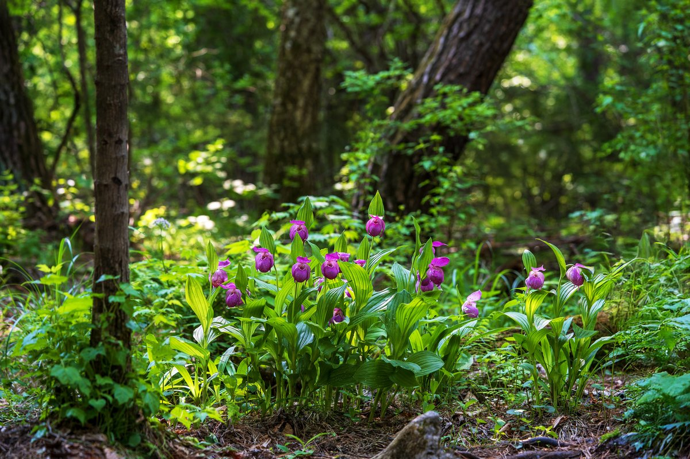

복주머니란
강원 양구
복주머니란은 쉽게 만날 수 있는 꽃이 아닙니다. 야생에서 마주친 자리도 이듬해에 다시 가 보면 비어 있기 일쑤입니다. 누군가 캐어 가기 때문입니다. 이곳은 마을 사람들이 지켜 주는 자생지여서 해마다 같은 자리에 꽃이 핍니다. 비무장지대가 멀지 않은 산골입니다.
여러 곳에서 이 꽃을 만났지만, 이날만큼 개체 수가 많고 고르게 핀 자리는 없었습니다.
이름 그대로 복주머니를 닮았습니다. 꽃말은 행운과 행복, 그리고 희망입니다. 이 사진을 보시는 분들께도 그 복이 가 닿기를 바랍니다.